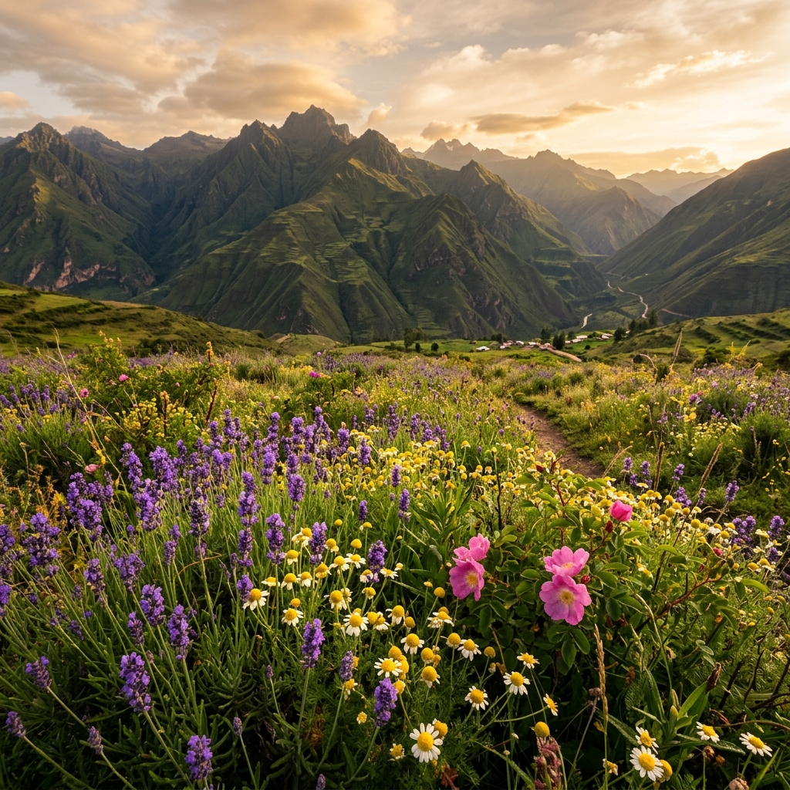

Galería
Momentos florales
Una mirada a la belleza que nace en las tierras de Huilloa.


Cultivadas en las faldas de los Andes, nuestras flores llevan consigo la vitalidad y el color de la sierra peruana.
Nuestras flores se cultivan sin prisa, siguiendo los ritmos naturales de la tierra andina. Sin cámaras frigoríficas artificiales que alteren su aroma, sin químicos que fuercen su crecimiento.
Lo que recibes es pura naturaleza: flores que huelen como deben oler, con colores vibrantes y una durabilidad que sorprende. Cada ramo lleva el alma de la familia que lo cultivó.
Hacer un pedido floralUna selección de las flores más hermosas de nuestra región, disponibles por temporada.
Rosas de tallo largo cultivadas a gran altitud, conocidas por su mayor durabilidad y aroma intenso. Disponibles en rojo, rosado, blanco y amarillo.
Símbolo de la tierra peruana, nuestros claveles son robustos y coloridos. Ideales para arreglos y decoraciones tanto cotidianas como especiales.
Alegría en estado puro. Nuestros girasoles llegan a una altura excepcional gracias al suelo rico de Huilloa. Perfectos para regalar felicidad.
Elegancia pura. Los lirios blancos de Huilloa representan pureza y renovación. Muy apreciados para ceremonias, bodas y momentos especiales.
Exóticos y elegantes, nuestros tulipanes andinos destacan por su color profundo y su forma perfecta. Un regalo único que no olvidarás.

Una colección de flores nativas de los Andes, únicas e irrepetibles. Cada ramo es una sorpresa de la naturaleza, irrepetible y auténtico.
Una mirada a la belleza que nace en las tierras de Huilloa.
Contáctanos y preparamos el arreglo floral perfecto para tu ocasión especial, con la frescura y el amor que solo Huilloa puede dar.